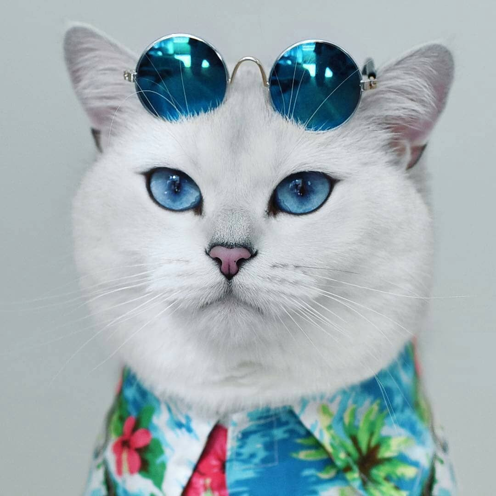
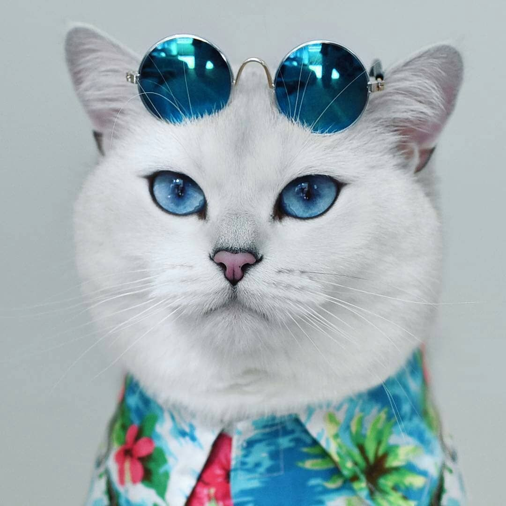

Seja bem vindo ao meu site! Aqui pretendo postar tudo que gosto, possíveis curiosidades sobre tal e também um pouco sobre mim (talvez isso seja interessante...). Primeiro vou começar por mim, eu sou Suffovinne, sobrevivi por 25 anos e a coisa que eu mais amo são gatos. Os gatos deveriam dominar o planeta Terra, são lindos, glamurosos, independentes, meigos, fofos e os melhores em memes, como esse da imagem. A principio esse deveria ser um site "profissional" onde poderia mostrar as minhas habilidades com programação, mas como diria alguém muito especial pra mim " o foguete Angela tá chegando", resolvi deixar isso especial pra mim, afinal um programador feliz programa feliz. Eu só não sei dizer se isso se encaixa dentro de um blog (sim te blog versão back-end pra ser resolvido), e como aqui é meu mundo secreto vou contar sobre isso em breve.
Agora que já fale dos gatos (tenho 4 em casa), vou falar de The Elder Scrols V: Skyrim (só de pensar os pelos do braço já arrepiam!), o joguinho pra te fazer criar raiz no sofá de tanto jogar, e olha que eu jogo desde o lançamento no ps3, muto tempo. Eu lembro como se fosse ontem quando estava criando meu primeiro personagem, um Khajiit, o nome dele era "Tcheckov" e o mais legal dele era que ele era mago (não faz o mínimo de sentido), e com o passar do tempo ele ganhava novos updates, chegou um momento que ele ficou tão forte que um tapa já matava os inimigos, e foi aí que eu descobri a mágica secreta, transformar o Skyrim num Minecraft. Com a nova expansão "Hearthfire" você podia construir a sua casa!! Nossa eu pirei muito, só dava o Tcheckov minerando pra pegar ferro e fazer prego pra martelas as portas, e detalhe eu fazia questão de deixar cada casa diferente da outra(bons tempos). Não importava o quanto eu jogava sempre, mas sempre mesmo tinha algo pra fazer, Tcheckov já pertencia a todas as guildas, ele era o mais "brabo", então tomei vergonha na cara e platinei o jogo no PlayStation 4, e demorei muito também... Se não bugar não é Skyrim, só pela quantidade de bugs que apareciam no meu jogo, levou muito tempo pra conseguir o troféu de ser procurado em todos os rinos e pra piorar eu esquecia e acabava subornando os guardas (muito feio!), é eu não joagava como uma paladina.
 
